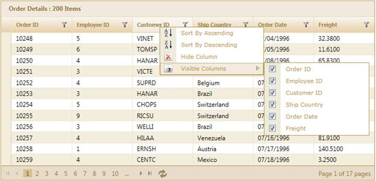

The context menu support in Essential Grid for MVC improves user interaction by allowing you to access the basic operations of the grid such as paging, sorting, grouping, filtering etc.
The context menu allows you to access the various basic functions of the grid and to customize it with great ease by allowing you to add, remove, and clear the items.
The following figure gives you a basic idea of the structure and appearance of the context menu in Essential Grid for MVC:

Figure 248: Grid with Context Menu in Header
 To View the Samples
To View the Samples